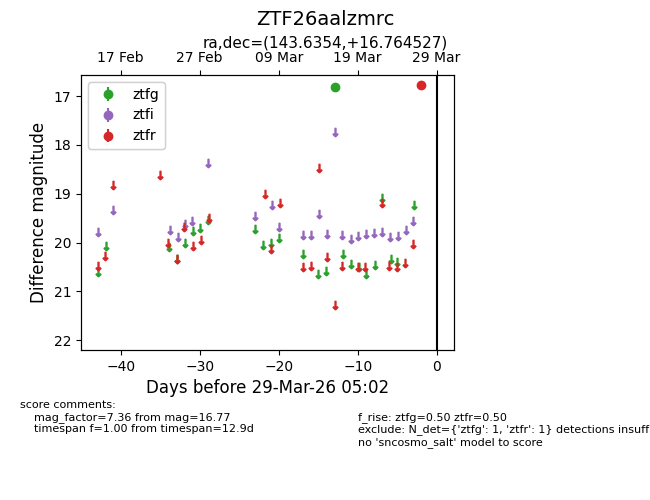
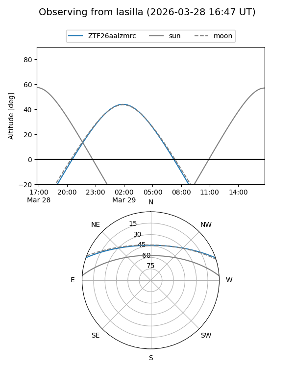
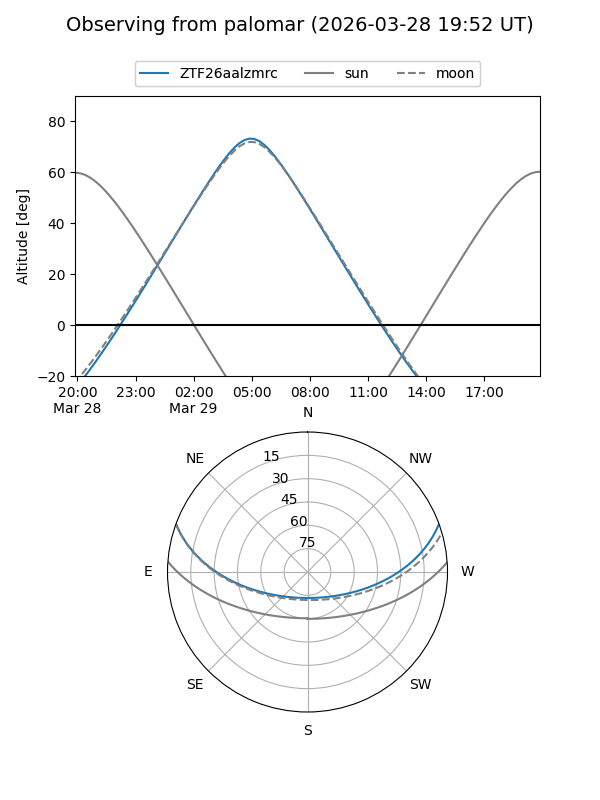

ZTF26aalzmrc
Target ZTF26aalzmrc at 2026-03-29 05:05
Aliases and brokers:
FINK: link
Lasair: link
ALeRCE: link
alt names
ZTF26aalzmrc (ztf,fink_ztf)
Coordinates:
equatorial (ra, dec) = 143.6354,+16.76453
equatorial (HMS+DMS) = 09:34:32.49,+16:45:52.30
galactic (l, b) = (215.1781,+43.47772)
Flags:
Photometry:
last ztfg=16.82, ztfr=16.77
1 ztfg, 1 ztfr detections
Lightcurve

Visibility


Additional plots